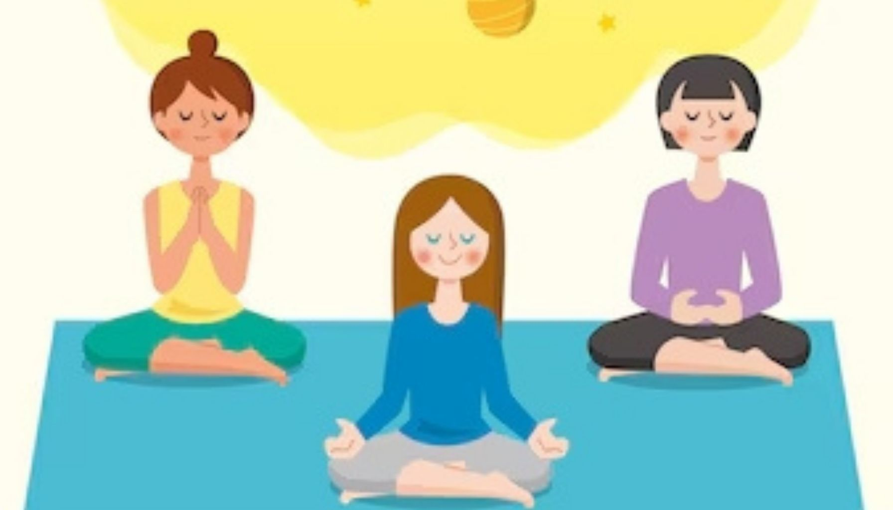
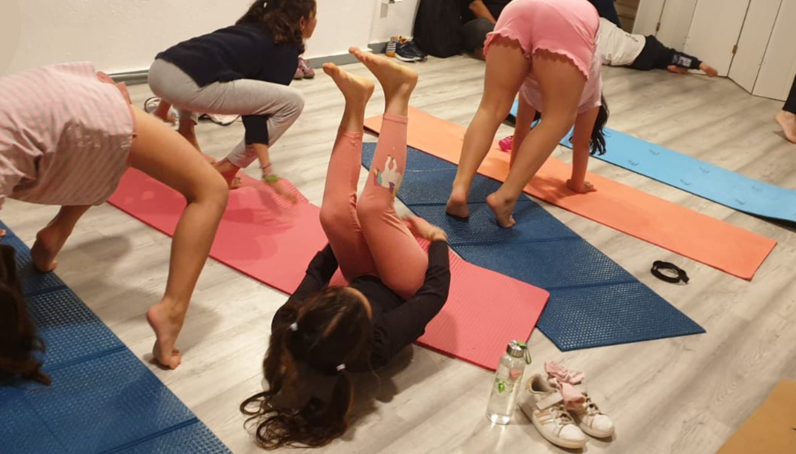

El yoga no solo beneficia el desarrollo físico de los niños, sino que también
promueve su bienestar emocional.
A través de la práctica regular de yoga, los niños pueden aprender a manejar sus
emociones de manera saludable y encontrar un equilibrio emocional más positivo.
El yoga puede ser especialmente útil para los niños que experimentan estrés o
ansiedad.
A través de ejercicios de respiración y técnicas de relajación, los niños pueden
aprender a controlar su respuesta al estrés y encontrar un estado de calma y
serenidad.
Además, el yoga fomenta la autoestima y la confianza en los niños.
A medida que los niños logran dominar nuevas posturas y superar desafíos en su
práctica de yoga, también desarrollan un mayor sentido de logro y confianza en sí
mismos.
Integrar el yoga en la vida de los niños puede ser una herramienta valiosa para
promover su salud emocional y su bienestar general.
El bienestar emocional de los niños es fundamental para su desarrollo
saludable y su capacidad de enfrentar los desafíos de la vida. Los niños que
tienen un buen equilibrio emocional son más capaces de regular sus
emociones, establecer relaciones positivas y lidiar con el estrés de manera
efectiva.
Por otro lado, los niños que experimentan altos niveles de estrés y ansiedad
pueden enfrentar dificultades en su desarrollo social, emocional y
cognitivo.
El yoga es una práctica ancestral originaria de la India que combina posturas
físicas, técnicas de respiración y meditación para promover el equilibrio y
la conexión entre el cuerpo, la mente y el espíritu.
El yoga se basa en la creencia de que todos los aspectos de nuestra
existencia están interconectados y que el equilibrio y la armonía son
fundamentales para una vida plena y saludable.
Cómo el yoga beneficia el bienestar emocional de los niños
El yoga ofrece una amplia gama de beneficios para el bienestar emocional de los niños. A
través de la práctica regular del yoga, los niños aprenden a:
El yoga enseña a los niños a reconocer y gestionar sus emociones de manera
saludable. Aprenden a identificar cómo se sienten en su cuerpo y mente, y a
utilizar técnicas de respiración y meditación para calmar su mente y
encontrar un equilibrio emocional.
El yoga les brinda a los niños herramientas prácticas para enfrentar el
estrés y las situaciones difíciles de la vida. Aprenden a mantener la calma,
a encontrar soluciones creativas y a cultivar una actitud positiva frente a
los desafíos.
La práctica del yoga fomenta la confianza y la aceptación de uno mismo. A
través de la conexión con su cuerpo y mente, los niños aprenden a apreciarse
tal como son y a desarrollar una imagen corporal positiva.
Estudios de investigación sobre el yoga y el bienestar emocional de los niños
La efectividad del yoga en la promoción del bienestar emocional de los niños ha sido
respaldada por numerosos estudios de investigación. Estos estudios han demostrado que la
práctica regular del yoga puede ayudar a reducir los niveles de estrés y ansiedad en los
niños, mejorar su capacidad de atención y concentración, y promover una mayor sensación
de calma y equilibrio emocional.
Un estudio publicado en el Journal of Developmental and Behavioral Pediatrics encontró
que los niños que participaron en un programa de yoga de ocho semanas mostraron una
disminución significativa en los niveles de ansiedad y una mejora en la autorregulación
emocional en comparación con los niños que no participaron en el programa.
Otro estudio realizado por la Universidad de California en Los Ángeles (UCLA) encontró
que la práctica del yoga en la escuela mejoró la capacidad de atención y concentración
de los niños, lo que a su vez se tradujo en un mejor rendimiento académico.

Introducción del yoga a los niños
La introducción del yoga a los niños debe ser gradual y adaptada a su edad y nivel de
desarrollo. Es importante crear un ambiente seguro y divertido donde los niños se
sientan cómodos y motivados para participar. Aquí hay algunos consejos para introducir
el yoga a los niños:
Hazles entender de manera sencilla en qué consiste el yoga y cómo puede
beneficiarlos. Utiliza palabras y conceptos que sean comprensibles para su
edad.
Incorpora juegos, canciones y actividades interactivas en las sesiones de
yoga para hacerlo más atractivo y entretenido para los niños. Recuerda que
el yoga para niños debe ser lúdico y estimulante.
Practica yoga en Cambrils junto con los niños y niñas para inspirarlos y motivarlos. Muestra
entusiasmo y disfrute durante las sesiones, y ellos estarán más dispuestos a
participar.

Posturas de yoga para promover el bienestar emocional en los niños
El yoga ofrece una amplia variedad de posturas que pueden ayudar a promover el bienestar
emocional de los niños. Estas posturas pueden ser adaptadas a diferentes edades y
niveles de habilidad. Aquí hay algunas posturas de yoga recomendadas para promover el
bienestar emocional en los niños:
Esta postura ayuda a los niños a encontrar equilibrio físico y mental. Les
enseña a concentrarse y a mantenerse firmes como un árbol.
Esta secuencia de posturas es excelente para liberar la tensión en la espalda
y promover la flexibilidad de la columna vertebral. También ayuda a los
niños a conectarse con su respiración.
Esta postura de relajación ayuda a los niños a encontrar calma y
tranquilidad. Les permite soltar el estrés y la tensión acumulados.
Incorporación de la atención plena y la meditación en la práctica del yoga en Cambrils para
niños y niñas
Además de las posturas físicas, la incorporación de la atención plena y la meditación en
la práctica del yoga para niños puede potenciar aún más los beneficios para el bienestar
emocional. La atención plena implica prestar atención plena y consciente al momento
presente, sin juzgar ni evaluar. La meditación, por su parte, ayuda a calmar la mente y
cultivar la serenidad interior.
Algunas técnicas de atención plena y meditación que pueden ser adaptadas para niños
incluyen:
Enseña a los niños a prestar atención a su respiración y a tomar
respiraciones profundas y lentas para relajarse.
Invita a los niños a explorar su cuerpo con atención plena, prestando
atención a las sensaciones físicas y a cómo se sienten en diferentes partes
del cuerpo.
Guía a los niños a través de imágenes mentales positivas y relajantes,
ayudándolos a imaginar lugares tranquilos y seguros.
Crear un ambiente seguro y de apoyo para el yoga de los niños
Es fundamental crear un ambiente seguro y de apoyo para la práctica del yoga de los
niños. Aquí hay algunas pautas para lograrlo:
Asegúrate de tener un espacio limpio y despejado para que los niños
puedan moverse libremente y sin obstáculos. Si es posible, utiliza
esteras de yoga o alfombras para brindar comodidad y estabilidad.
Explica las instrucciones y las expectativas de manera clara y
comprensible para los niños. Utiliza un lenguaje sencillo y evita
términos técnicos complicados.
Fomenta un ambiente de respeto mutuo y aceptación incondicional. Anime a
los niños a respetar sus propios límites y a no compararse con los
demás.
Recursos de yoga en Cambrils para promover el bienestar emocional de los niños
Existen numerosos recursos disponibles para ayudarte a promover el bienestar
emocional de los niños a través del yoga. Aquí hay algunos recursos
recomendados:
Hay una amplia variedad de libros y cuentos ilustrados que introducen
el yoga y la atención plena de manera lúdica y accesible para los
niños. Estos libros pueden ser una excelente herramienta para
enseñarles sobre el yoga y sus beneficios.
Hay muchas aplicaciones y videos en línea que ofrecen sesiones de
yoga diseñadas específicamente para niños y niñas. Estas herramientas
interactivas pueden hacer que la práctica del yoga sea más divertida
y atractiva para los niños.
Busca programas de yoga en Cambrils para niños y niñas. Estas clases
suelen ser impartidas por instructores capacitados en yoga para
niños y niñas ofrecen una experiencia interactiva y enriquecedora.
Conclusión
El yoga es una poderosa herramienta para promover el bienestar
emocional de los niños. A través de la práctica del yoga, los
niños aprenden a controlar sus emociones, a enfrentar el estrés
de manera saludable y a cultivar una mente equilibrada y
tranquila. El yoga en Cambrils no solo beneficia el bienestar emocional de
los niños, sino que también contribuye a su desarrollo físico,
mental y social.
Si deseas ayudar a tus hijos o estudiantes a desarrollar
habilidades de afrontamiento saludables, a mejorar su
concentración y a cultivar una mente equilibrada, el yoga en Cambril puede
ser la respuesta. Explora las diversas posturas, técnicas de
respiración y meditación del yoga y descubre cómo esta práctica
milenaria puede transformar la vida de los niños.
¡No dudes en embarcarte en esta maravillosa aventura del yoga
para promover el bienestar emocional de los niños!
¡No dudes en contáctarnos
para obtener más información sobre cómo el yoga puede beneficiar a tu hijo!